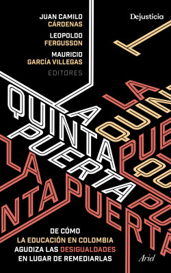

La quinta puerta
Reseña por Jorge I. Zuluaga

Ver reseña en GoodReads (necesita cuenta)
Soy padre de familia colombiano, pero también profesor de una institución educativa de carácter público (universidad) y después de leer "la quinta puerta" creo que con mis acciones, pero también con mis omisiones, he contribuido al grave problema que describe el libro: el incremento en la desigualdad social propiciado por las brechas de calidad educativa entre el sector público y privado. En una expresión muy acertada, Colombia vie un apartheid educativo.
Como decimos en mi tierra, "¡que chicharrón!".
Aunque trabajo en el sector educativo me sorprendí, después de leer este libro, de lo poco que sabía sobre esta crisis en la educación en mi país; en particular lo concerniente a la “bola de nieve” de la rampante segregación educativa y el resultante crecimiento en la desigualdad social y económica. Este libro debería ser una lectura obligada para los adultos, especialmente los adultos con hijos en Colombia, y, obvio, para todos los actores de la educación en el país.
El texto es una colección de ensayos (algunos, al parecer, artículos académicos) sobre la historia y el estado presente del creciente apartheid educativo en Colombia. No soy precisamente hincha de leer este tipo de colchas de retazos que reúnen escritos académicos y se presentan como un libro único, pero debo admitir, y espero que los que lo hayan leído o lo vayan a leer compartan conmigo esta apreciación, que quienes hicieron la edición de los textos para darle una "unidad narrativa", para armonizarlos, hicieron un excelente trabajo.
Ahora permítanme que les ilustre con mi caso particular (que creo es un ejemplo típico de lo que pasa en la clase media en Colombia) algunas de los impresionantes hallazgos descritos en este libro. Sé que al hacerlo me alejaré de lo que esperarían de una reseña de un libro, pero les aseguro que este es el mejor ejercicio para ilustrar el contenido del libro y, tal vez, para animarlos a leerlo. Sin quererlo, mi propia vida resulto ser un ejemplo viviente del apartheid educativo colombiano. ¡Terrible!.
Me gradué de un colegio público en Bello (Antioquia).
La verdad me siento muy orgulloso de mi colegio y hoy, que soy una persona relativamente exitosa, estoy agradecido con lo que el colegio hizo por mí. Sin embargo, debo decir que solo estudie los últimos 3 años del bachillerato allí. La mayor parte de mi educación básica fue en un colegio privado (esto, a pesar de que mi papá era rector de una escuela pública que como todas estaba llena de problemas).
Después de leer "La quinta puerta" lo entiendo: fue allí donde empezaron mis ventajas.
El colegio público del que me gradúe era muy bueno, al menos para los estándares del país. Era un tiempo en Colombia en el que se estaba explorando la modalidad de educación diversificada (educación orientada a áreas específicas o al trabajo) como la que se describe en el libro, otorgan los INEMS. Esa modalidad ya casi no existe en el sector público, lo que en parte es culpa de la degradación debida al descuido gubernamental justamente de ese sector de la educación.
Al terminar el bachillerato tuve la suerte (que tuvieron pocos de mis compañeros de colegio) de ganar un cupo en una universidad pública de alta calidad. ¿Fue porque era más inteligente que mis compañeros o porque tenía ya una ventaja sobre ellos que venía de mi infancia y educación básica en colegios privados?. No lo sé, pero "La quinta puerta" ha hecho que me lo pregunte.
Me case con una persona que se educó toda la vida en colegio privado (religioso). Hoy tenemos tres hijos, todos tienen nombres muy colombianos, Sofía, Andrés y Daniel (lo de los nombres lo entenderán cuando lean el libro). Cuando llegó la hora de escoger dónde deberían estudiar nuestros hijos, mi esposa y yo decidimos que deberían hacerlo en colegios y universidades privadas. Esto, a pesar de ser yo profesor de una universidad pública; es decir, con mi acción repetí la elección de mi papá. Algunas de las instituciones privadas en las que estudiaron mis hijos eran buenas y otros no tanto, incluso pudieron ser peores que la calidad de instituciones públicas.
Al hacer esa elección, como padres de familia con una posición social relativamente privilegiada (privilegios que como han leído, venían ya de nuestra propia formación en colegios privados), evitamos exigirle al gobierno y a los actores de la educación pública, mayores inversiones y esfuerzos para aumentar la calidad de la educación. Aparte de mi labor personal como profesor de una universidad pública para hacer de ella la mejor posible, me desconecte, durante toda la infancia de mis hijos de la problemática de la educación pública básica.
Después de dejar el colegio público y de que mi propio papá se jubilará del magisterio, no volví a saber de las falencias de la educación pública y ahora confieso con vergüenza que como la vida de las personas que más quiero no estaba siendo afectadas por los defectos evidentes de esas instituciones, por los continuos paros o la deficiente preparación de los maestros, me importo, como decimos en mi tierra, un pepino lo que pasaba con la educación publica básica. ¡Muy mal!
Mis hijos obtuvieron (o no) en esas instituciones privadas, unos "activos sociales inmateriales" (un concepto que aprendí en este libro) que tal vez les permitan obtener mejores trabajos ahora que son adultos (uno de ellos ya está empleado como abogado y recibe un salario mucho mejor que el que yo tenía al graduarme de la universidad). Algunos de sus amigos, que no pudieron acceder a una educación de mayor calidad y quedaran rezagados.
Yo que creía que la vida que tenía era producto exclusivamente de mis esfuerzos e inteligencia, ahora debo reconocer que estoy uno de los extremos del apartheid educativo de mi país. Y pienso con verdadero dolor en la manera en la que mis acciones han contribuido. Espero que quiénes lean "La quinta puerta" y tal vez está reseña, a tiempo, puedan tomar mejores decisiones de las que yo tome o al menos sean conscientes de que no son solamente un producto milagroso de una sociedad imperfecta.
Si se identifican con una parte o con toda mi historia personal, creo que ya tienen la motivación suficiente para leer el libro. La problemática es sencillamente preocupante y lo peor, se está agrabando.
¿Se puede hacer algo?. Sí, pero no será fácil ni rápido. Para saberlo, solo lean el libro.
¡Una lectura urgente! ¡no demoren en hacerla!